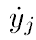
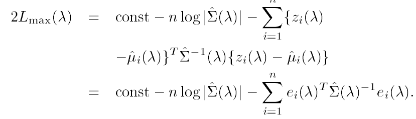
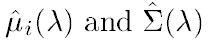
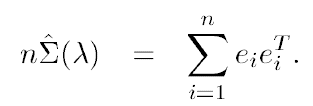
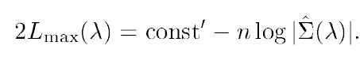
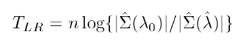
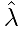
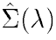
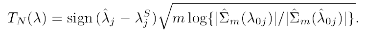

Introduction to transformations in multivariate analysis
As we have already seen in the analysis of transformations in regression analysis, the analysis of data is often improved by using a transformation of the response rather than the original response itself.
In the extension of the Box and Cox (1964) family to multivariate responses there is a vector λ of v transformation parameters λj, one for each of the v responses. As before, yi is the v × 1 vector of responses at observation i with yij the observation on response j. The normalized transformation of yij is given by

where  is is the geometric mean of the jth response. The value λj = 1 (j = 1,... , v) corresponds to no transformation of any of the responses. If the transformed observations are normally distributed with vector mean µi for the i-th observation and covariance matrix ∑, twice the profile loglikelihood of the observations is given by

In this equation the parameter estimates  are found for fixed λ and ei(λ) is the v × 1 vector of residuals for observation i for the same value of λ. As in the analysis of univariate transformations, it makes no difference in likelihood ratio tests for the value of λ whether we use the maximum likelihood estimator of ∑, or the unbiased estimator ∑u. Suppose the maximum likelihood estimator is used, so

When this estimate is substituted in the previous equation, the profile loglikelihood reduces to
So, to test the hypothesis λ = λ0, the likelihood ratio test statistic for transformation becomes

is compared with the χ2 distribution on v degrees of freedom. In this equation  is the vector of v parameter estimates maximising Lmax, which is found by numerical search. Replacement of  by the unbiased estimator results in the multiplication of each determinant by a factor which cancels, leaving the value of the statistic unchanged. There are two special cases when tests of the form of TLR are on one degree of freedom. In the first we test that all responses should have the same, unspecified, transformation, that is that λ1 = λ2 = ... = λv = λ. The second is the test of just one component of λ when all others are kept at some specified value. In both cases we sometimes plot TN, the signed square root form of these tests is used.
For transformations of a single variable we use forward plots of the score statistic Tp(λ). However, influential observations may only be evident for some transformations of the data, but not others. Therefore, we employ the forward search on untransformed data and on data subject to various transformations. In other words, with just one variable for transformation it is easy to use the fan plot from the five forward searches with standard values of λ to find satisfactory transformations, if such exist, and to discover the observations that are influential in their choice. However, with v variables for transformation, there are 5v combinations of the five standard values to be investigated. Whether or not the calculations are time consuming, trying to absorb and sort the information would be difficult. We therefore suggest three steps to help structure the search for a multivariate transformation:
- Run a forward search through the untransformed data, ordering the observations at each m by Mahalanobis distances calculated from untransformed observations. Estimate λ at each value of m. Use the forward plot of to select a set of transformation parameters.
- Rerun the forward search, now ordering the observations by distances calculated with the parameters selected in the first step; λ is again estimated for each m. As the search is now on transformed data, the order in which the observations enter the subset will have changed from that in Step 1. Again monitor the values of and of the likelihood ratio test for the transformation. If a correct transformation has been found, the parameter estimates, if well defined, will be stable until near the end of the search, when any outliers start to enter. At this point, the value of the test statistic may increase rapidly. How well defined the parameter estimates are can be determined by plots of profile loglikelihoods against the individual values of λ for various values of m. A flat likelihood will explain an estimate of λ which is behaving erratically. If some change is suggested in λ, perhaps because outliers appear to be entering before the end of the search, repeat Step 2 until a reasonable set of transformations has been found. Let this be λR.
- Confirmatory testing of the suggested transformation. We expand each transformation parameter in turn around the five common values of λ (-1, -0.5, 0, 0.5, 1), using the values of the vector λR for transforming the other v-1 variables. In this way we turn a multivariate problem into a series of v univariate ones. In each search we can test the transformation by comparing the likelihood ratio test with χ2 on 1 degree of freedom. But we use the signed square root of the likelihood ratio in order to learn whether lower or higher values of λ are indicated. The plot is thus a version of the fan plot.
In summary, for the analysis of multivariate transformations we monitor forward plots of parameter estimates and likelihood ratio tests for the vector parameter λ. We produce the fan plot using the multivariate version of the signed square root form of the univariate likelihood ratio test. We calculate a set of tests by varying each component of λ about λ0. Suppose we require a fan plot for λj. Let λ0(j) be the vector of all parameters in λ0 except λj. Then λ0(j) = (λ0(j):λjS) is the vector of parameter values in which λj takes one of the five standard values λS while the other parameters keep their values in λ0. To form the likelihood ratio test we also require the estimator0(j) found by maximization only over λj. More explicitly, we can write 0j = (λ0(j):j). Then the version, for multivariate data, of the signed square root likelihood ratio test is

We produce v fan plots, one for each variable, by letting λj, j = 1,... ,v take each of the five standard values. Alternatively, particularly if numerical maximization of the likelihood is time consuming, we could produce the fan plot from the signed square root of the score test .
This chapter considers the following procedures.
-
FSMtra implements the monitoring of maximum likelihood estimates of transformation parameters and the likelihood ratio test statistic for transformation. It is also possible to analyze for required steps of the search, the profile loglikelihoods of the transformation parameters. In summary, FSMtra implements steps 1 and 2 described above.
- FSMfan implements the confirmatory test for the suggested transformations. In summary, FSMfan implements step 3 described above